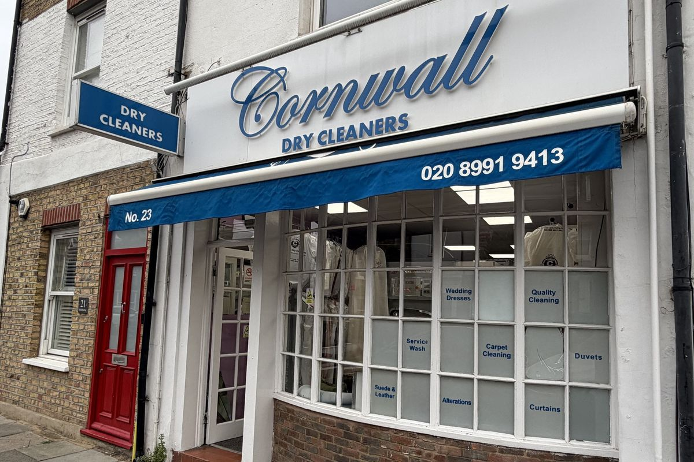
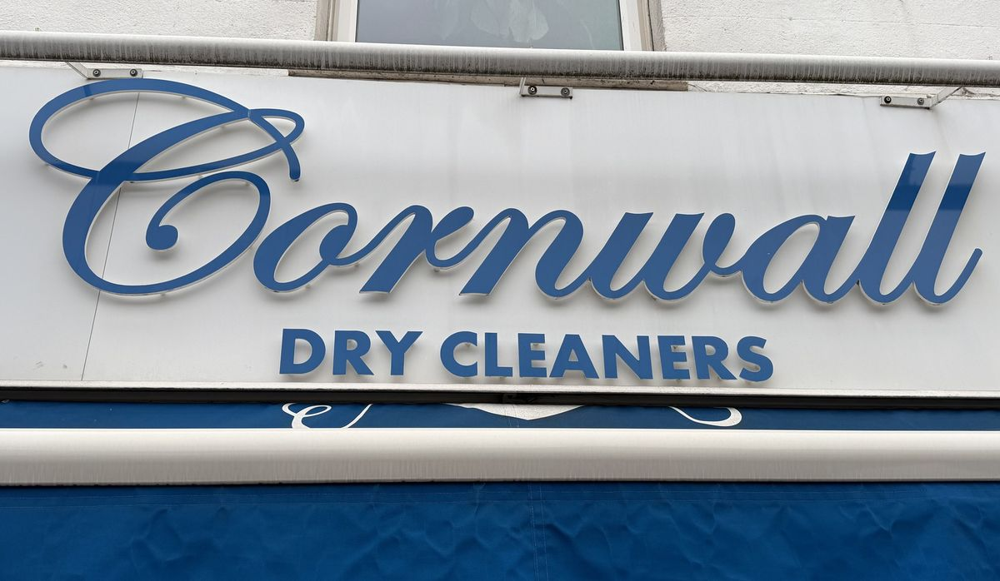

Dry cleaning
Suits, coats and office wear, cleaned and pressed.
Haven Lane · Ealing Broadway
020 8991 9413
Proudly independent, right on Haven Lane. Suits, coats, laundry and repairs — often next day if dropped in by 10am.
Call 020 8991 9413 Hours Mon–Fri 8am–6pm · Sat 9am–5pm

Services
Suits, coats and office wear, cleaned and pressed.
We inspect first and say honestly what will come out.
Service washes for homes and Airbnb hosts, on time.
Hems, zips, stitching and loose buttons.
Wedding and cocktail pieces, wool and restored goods.
Often next day if dropped in by 10am. Ask at the counter.
How a visit works
01
A minute from Haven Green. Tell us when you need it back.
02
Stains and repairs are inspected before we start.
03
Often next day if in by 10am, clean and pressed.
The shop
Proudly independent, right on Haven Lane since 2003. The same people take clothes in, check them before you collect, and remember the regulars.

“These guys really care about the quality of the service they provide and clearly check your goods before handing them back.”
Google review
From the Google listing
Stain removal, next-day work and repairs.
“Tucked away on a residential street. I’m so glad I found it. Cornwall cleaned my wool coat with such care and really good value.”
Google review
“Gina is the rock star of cleaning. I had a cocktail spilt over my suit trousers… they came back perfectly clean and pressed. Legendary service.”
Google review
“I’ve used both the repairs and dry cleaning services over the years. The staff always try to go the extra mile — fixing a loose button without me pointing it out.”
Google review
Visit the shop
1 minute from Haven Green / Ealing Broadway station. White fascia, blue awning — not on the Broadway itself.
| Monday | 8:00am – 6:00pm |
|---|---|
| Tuesday | 8:00am – 6:00pm |
| Wednesday | 8:00am – 6:00pm |
| Thursday | 8:00am – 6:00pm |
| Friday | 8:00am – 6:00pm |
| Saturday | 9:00am – 5:00pm |
| Sunday | Closed |
Closed on bank holidays — call the day before if you are unsure.
Questions
Often next day if dropped in by 10am. Repairs and wedding pieces can take longer — we will say when you drop off.
No. Drop in on Haven Lane.
Both. Contactless at the counter.
Closed on bank holidays. Call the day before if you are unsure.
Bring it in. We inspect first and say honestly what will come out.